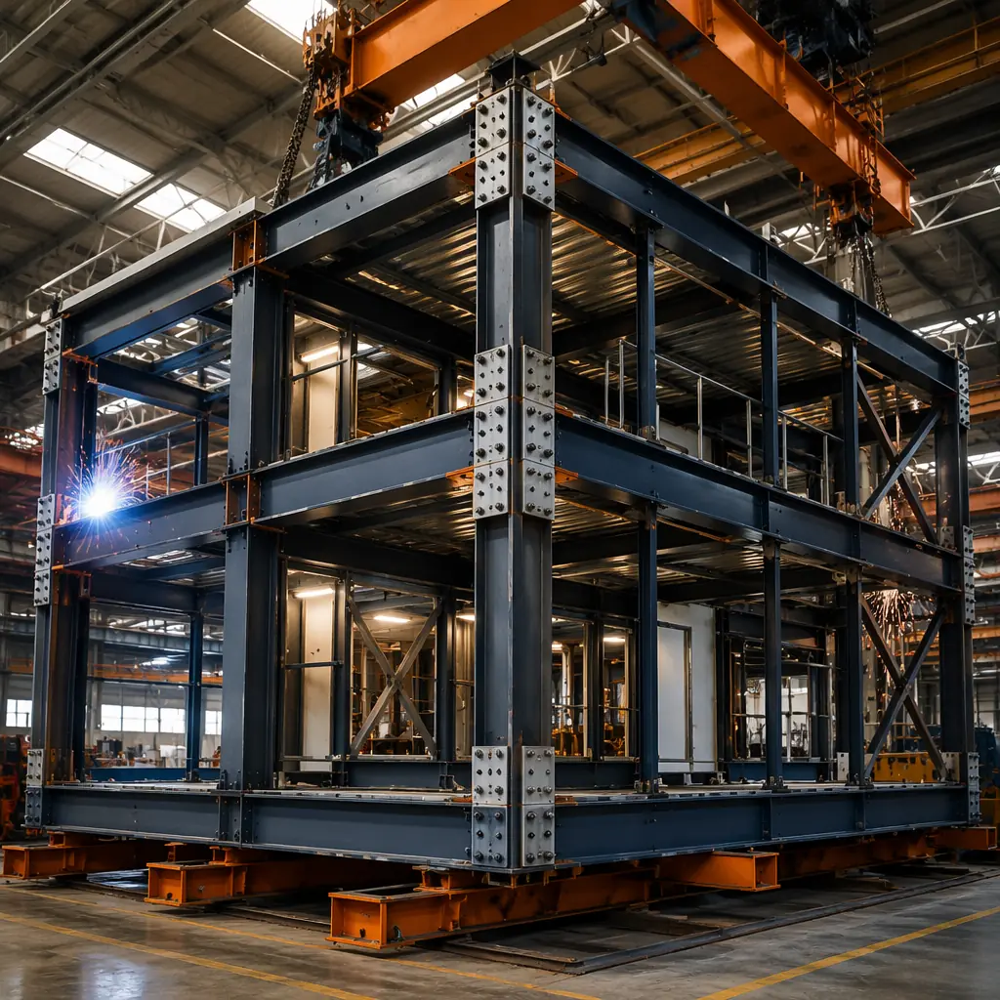
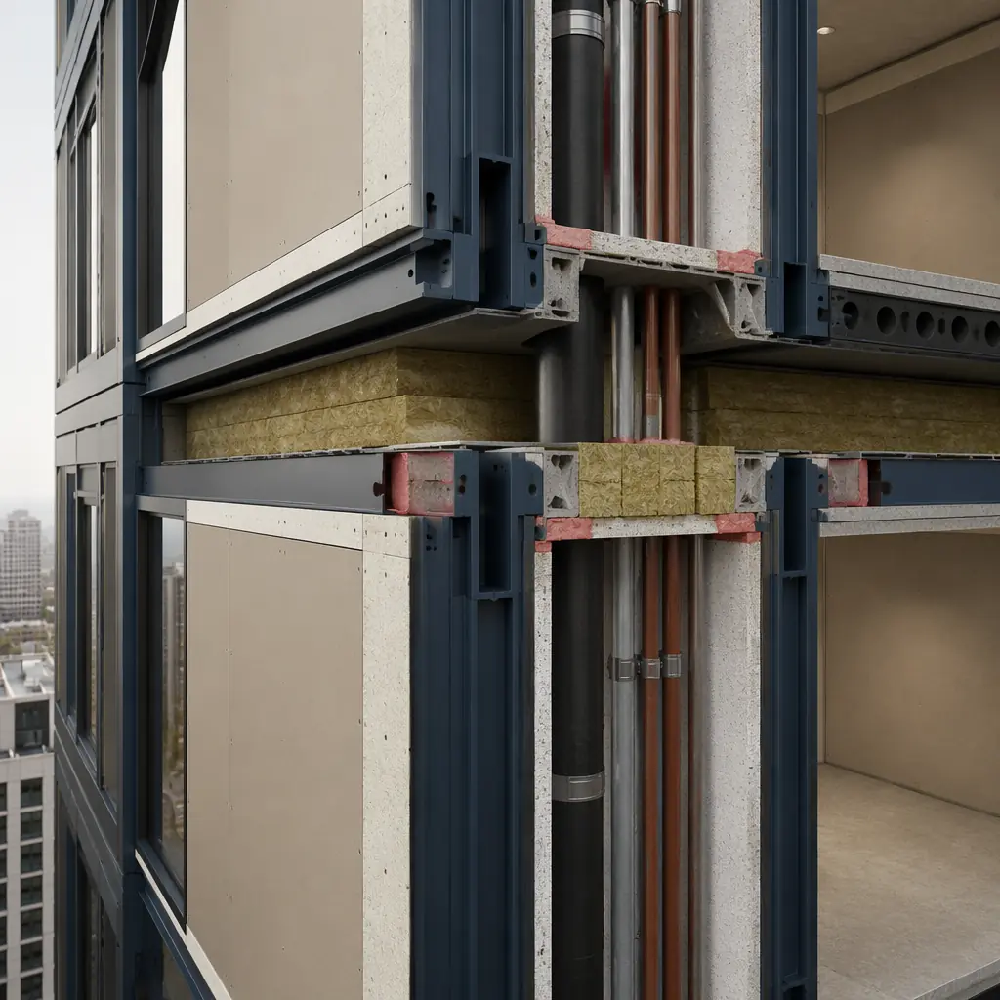
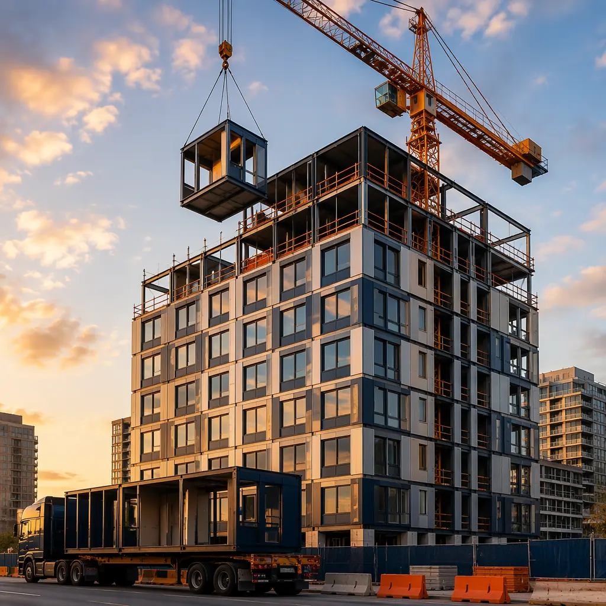
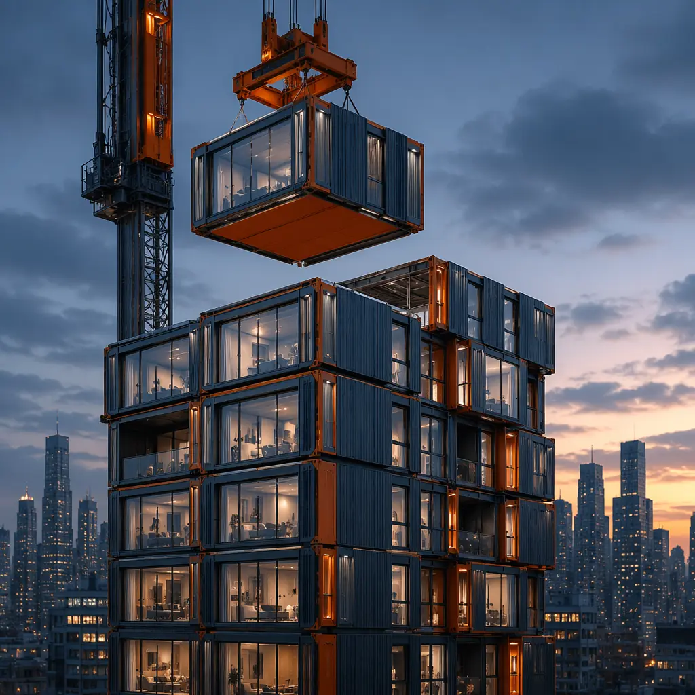

When developers hear "modular construction," most picture low-rise structures — two or three stories of stacked boxes, the domain of affordable housing and temporary classrooms. But that picture is a decade out of date. Today's modular high-rise construction routinely reaches 15–20 stories, with projects like 101 George Street in London (44 stories, the world's tallest modular building) and 461 Dean Street in Brooklyn (32 stories) proving that factory-built modules can compete at the top of the urban skyline. This article examines the structural engineering that makes modular high-rise possible: the connection systems that transfer loads across module stacks, the fire protection strategies for vertical shafts, the tolerance control that keeps 20-story module stacks plumb, and the cost equation that makes modular competitive against conventional high-rise at 6–20 stories.

The Structural System — How Modules Stack to 20 Stories
Conventional high-rise construction relies on a steel or concrete core that carries gravity and lateral loads, with floor plates attached around the perimeter. Modular high-rise uses a fundamentally different structural logic: each module is a self-supporting steel frame with four corner columns and perimeter beams, and the building's global stability comes from how these modules are connected — both to each other and to a central stability core.
Module-to-module connections. In a modular high-rise, the critical load path runs vertically through the corner columns of stacked modules. Each module's four corner columns must align precisely with the columns of the module below, creating a continuous load path from roof to foundation. The connection is typically achieved with a bolted end-plate system: each column terminates in a steel end plate with pre-drilled bolt holes, and modules are connected vertically using high-strength bolts (Grade 10.9 or A490) installed through access pockets in the column face. A single corner connection in a 15-story modular tower may carry 800–1,200 kN of axial load, requiring bolt groups of 4–8 M24 bolts per connection.
Horizontal ties and diaphragm action. Between adjacent modules on the same floor, horizontal connections transfer shear forces and provide diaphragm action for lateral load resistance. These ties typically use steel plates bolted across the gap between module edge beams, installed from inside the module through pre-designed access panels. The horizontal tie spacing is determined by the building's lateral load analysis — a 15-story modular building in a moderate seismic zone (SDC C) may require horizontal ties at 3–4 meter centers along each module interface.
The stability core. Modular high-rise buildings almost always include a cast-in-place concrete or steel-braced stability core (housing elevators and stairs) that provides the majority of lateral load resistance. Modules are connected to the core horizontally at each floor level, transferring wind and seismic forces from the module stacks to the core. The core is built conventionally — using slip-form or jump-form methods — and modules are craned into position around it as the core rises. This hybrid approach combines the speed of modular construction for 80–90% of the building volume with the proven lateral stability of a conventional core.

Tolerance Stack-Up — The 0.5 mm Problem Across 20 Stories
The single greatest engineering challenge in modular high-rise is dimensional tolerance control. A module built 3 mm out of square in the factory, multiplied across 20 stories of stacked modules, produces a cumulative deviation of 60 mm — enough to prevent bolt-hole alignment at corner connections, create gaps in fire-rated shaft enclosures, and misalign facade panels by a visible margin. Modular high-rise construction requires tolerance control an order of magnitude tighter than conventional site-built construction.
Factory dimensional control. Module frames are fabricated on precision jigs with laser alignment verification at every stage: column straightness checked to within L/1000 deviation, corner-to-corner diagonal measured to within ±2 mm, and base plate flatness verified to within 1 mm across the module footprint. After frame welding, each module undergoes a dimensional survey using a 3D laser scanner that captures 100,000+ measurement points and generates a deviation map. Modules exceeding tolerance limits are reworked or rejected before they leave the factory.
Stacking alignment on site. The first lift of modules is the most critical: if the ground-floor modules are set with even a 2 mm misalignment, the error compounds through every subsequent lift. High-rise modular projects use survey-grade total stations to position each module within ±3 mm of design coordinates. Steel shim packs at column bases provide final vertical adjustment. After each lift is placed and bolted, the entire floor level is re-surveyed before proceeding to the next lift — a quality gate that conventional construction does not replicate.
Real-world performance. The 44-story 101 George Street project in London achieved a cumulative vertical deviation of just 12 mm across its full height — well within the H/600 tolerance specified by Eurocode. This was achieved through factory dimensional control at the module level combined with real-time total station tracking during every lift. The project's tolerance performance exceeded what is typically achieved in conventional high-rise concrete construction, where column plumbness deviations of 25–40 mm across 40+ stories are common.
Fire Engineering — Vertical Shaft Protection in Modular High-Rise
Fire safety in high-rise buildings depends on compartmentation: preventing fire spread vertically through shafts and horizontally between occupied spaces. Modular high-rise construction introduces specific fire engineering challenges because the building is assembled from discrete modules, each with its own floor, ceiling, and wall assemblies. The joints between modules — the "inter-module gap" — create potential fire paths that do not exist in monolithic construction.
Inter-module fire stopping. Every gap between adjacent modules — horizontally at the demising wall and vertically at the floor-to-floor junction — must be sealed with a fire-rated system that maintains the same fire resistance rating as the module's wall and floor assemblies (typically 90–120 minutes for high-rise residential). The standard approach uses intumescent sealant strips compressed between module faces during installation, combined with mineral wool packing and fire-rated mastic at the interior and exterior faces. The intumescent material expands to 5–10 times its original volume when exposed to heat, sealing the gap against fire and smoke passage.
Service riser shafts. In a modular high-rise, vertical service risers (MEP, electrical, data) run through stacked modules with aligned shaft openings. Each module's shaft opening is lined with a fire-rated shaft wall system (typically 2-hour rated), and the gap between modules at the shaft penetration is fire-stopped with the same intumescent-and-mineral-wool system used at module interfaces. Critically, the shaft is tested as a complete assembly — not just the individual components — with a full-scale fire test that includes the module-to-module joint. This is a standard requirement under NFPA 285 and EN 13501-2 for high-rise modular buildings.
Stair and elevator core integration. The concrete stability core is fire-rated independently of the modules, with 2–4 hour shaft wall construction for the stair and elevator enclosures. The interface between module corridor walls and the concrete core is fire-stopped using the same inter-module gap sealing approach, maintaining continuous compartmentation from the occupied module spaces through the core interface. Pressurization systems for exit stairs (required above 20 meters in most jurisdictions) are integrated into the core design and verified through commissioning tests before occupancy.

Cost Equation — When Modular High-Rise Beats Conventional
The construction cost premium that modular high-rise commands over conventional methods varies with building height, module repetition, and local labor market conditions. Understanding where the crossover point sits is essential for developer feasibility analysis.
Hard costs at 6–10 stories. In this height range, modular construction is cost-competitive with conventional methods. The module manufacturing cost (steel frame, factory MEP fit-out, interior finishes) typically runs $220–$280 per square foot (2026 US pricing). When combined with site costs (foundation, core construction, module cranage, connections), the all-in hard cost is $320–$380 per square foot. Conventional steel-frame or concrete flat-plate construction in the same height range runs $310–$370 per square foot — making modular effectively at parity or carrying a small 3–5% premium that is offset by the 30–40% schedule savings.
Hard costs at 11–20 stories. As height increases, the module frame must be heavier to carry higher axial loads (column sections increase from HSS 200×200×10 at 6 stories to HSS 300×300×16 at 20 stories), and the connection system requires larger bolt groups and thicker end plates. This drives the module cost to $250–$310 per square foot, with all-in costs reaching $380–$450 per square foot. Conventional high-rise at the same height runs $350–$420 per square foot. Modular carries a 5–10% premium at this height — but the schedule compression (18 months vs 28 months for a 15-story building) and early revenue capture typically produce a positive net present value despite the small unit-cost premium.
The developer's NPV calculation. For a 15-story, 120-unit residential tower at $400/sq ft modular versus $380/sq ft conventional on a $24 million hard-cost budget: the $1.2 million modular premium is more than offset by 10 months of earlier rental income ($180,000/month at stabilization), 10 months less construction loan interest ($80,000/month at 7%), and reduced general conditions and site supervision ($50,000/month). The net result: modular delivers the project with a 12–15% higher internal rate of return despite the unit-cost premium.
Real Projects That Prove the Model
101 George Street, London (44 stories, 2025). The world's tallest modular building delivers 546 residential units across two towers using 1,525 steel-framed modules manufactured offsite. Construction timeline: 28 months from groundbreaking to first occupancy, compared to an estimated 42–48 months for conventional construction. The project achieved BREEAM Excellent certification, demonstrating that modular high-rise can meet stringent sustainability standards at height.
461 Dean Street, Brooklyn (32 stories, 2016). This 363-unit modular residential tower was the tallest modular building in the world at completion. The project used 930 modules manufactured at the Brooklyn Navy Yard, each delivered fully finished with interior fixtures, plumbing, and electrical. Despite well-publicized contractual disputes between the developer and modular manufacturer, the building itself demonstrated that factory-built modules can deliver high-quality residential units at high-rise scale — and lessons learned from this project directly informed the connection system and tolerance specifications used on subsequent modular high-rise projects worldwide.
La Trobe Tower, Melbourne (44 stories, 2022). A mixed-use modular tower combining 206 residential units with ground-floor retail, using a hybrid system of precast concrete modules for the residential floors stacked around a cast-in-place concrete core. The project demonstrated that modular high-rise works equally well in concrete as in steel, and delivered units to the Melbourne rental market 14 months ahead of a comparable conventional project.

When Modular High-Rise Is the Right Choice — Decision Framework
Not every high-rise project should be modular. The method works best when specific conditions align:
Module repetition. The economic model for modular high-rise depends on manufacturing multiple identical or near-identical modules. A hotel, student housing, or build-to-rent residential project with 80–95% repeatable unit types is ideal. A luxury condominium with 30 unique floor plans across 60 units is not — the factory setup cost per unique module type erases the schedule advantage.
Site access and logistics. High-rise modular construction requires a crane capable of lifting modules weighing 15–35 tonnes to heights of 20+ stories, and a laydown area or just-in-time delivery staging that can handle module delivery trucks (typically 16-meter flatbeds). Dense urban sites with zero lot-line setbacks may not have room for module staging. Projects on tight urban sites can use night-time road closures and immediate-lift strategies, but this adds logistics cost.
Local modular manufacturing capacity. The factory that produces high-rise modules must be within economic transport distance (typically 300–500 km, or up to 800 km for high-value projects). Transport cost per module increases by approximately $2.50/km beyond 300 km. A project 1,200 km from the nearest qualified modular factory faces a $2,250 per-module transport premium that may tip the cost equation against modular. Our transport logistics guide covers module shipping costs, route planning, and international module transportation requirements.
Procurement pathway. Modular high-rise procurement differs from conventional construction procurement. The developer typically contracts separately with the modular manufacturer (for module design, fabrication, and delivery) and a general contractor (for site work, core construction, and module installation). This two-contract structure requires more active developer coordination than a single design-build contract — but it also gives the developer more direct control over the module manufacturing schedule and quality. Our RFP and procurement guide covers the modular contract structure in detail.
Foundation considerations. High-rise modular buildings impose concentrated point loads at module corner columns rather than distributed wall loads, requiring foundation design that accounts for load concentration at column positions. Pile-supported raft foundations or thick reinforced mat slabs are typical for modular high-rise. Our foundation systems guide covers the specific foundation requirements for modular buildings of different heights and soil conditions.
Future Trajectory — Where Modular High-Rise Is Headed
Three developments are pushing modular high-rise toward mainstream adoption in the 2026–2030 window:
Mass timber hybrid modules. Cross-laminated timber (CLT) modules are emerging as a lower-carbon alternative to steel-framed modules for buildings up to 12–18 stories. CLT modules weigh approximately 30% less than equivalent steel modules, enabling taller stacks on the same foundation, and carry a 50–70% lower embodied carbon footprint. The first CLT modular high-rise projects are under construction in Vancouver and Stockholm, with completion expected in 2026–2027.
Volumetric MEP pods for high-rise. Separate from full module construction, prefabricated MEP riser pods — factory-built vertical service cores containing all plumbing, electrical, and HVAC risers for a full building height — are being integrated into conventional high-rise projects. These pods install as single lifts, connecting to floor-level distribution systems with pre-engineered plug-in connections. They deliver the installation speed of modular construction without requiring the entire building to be modular, and are increasingly specified for conventional high-rise projects as a productivity tool.
Automated module connection systems. Current module connections require manual bolt installation through access pockets — a labor-intensive process that accounts for 25–30% of on-site installation time. Research at ETH Zurich and the University of Cambridge is developing self-aligning connection systems that use tapered guide pins and automated hydraulic locking mechanisms, reducing connection time from 20–30 minutes per corner to under 2 minutes. These systems are expected to reach commercial deployment by 2028.
